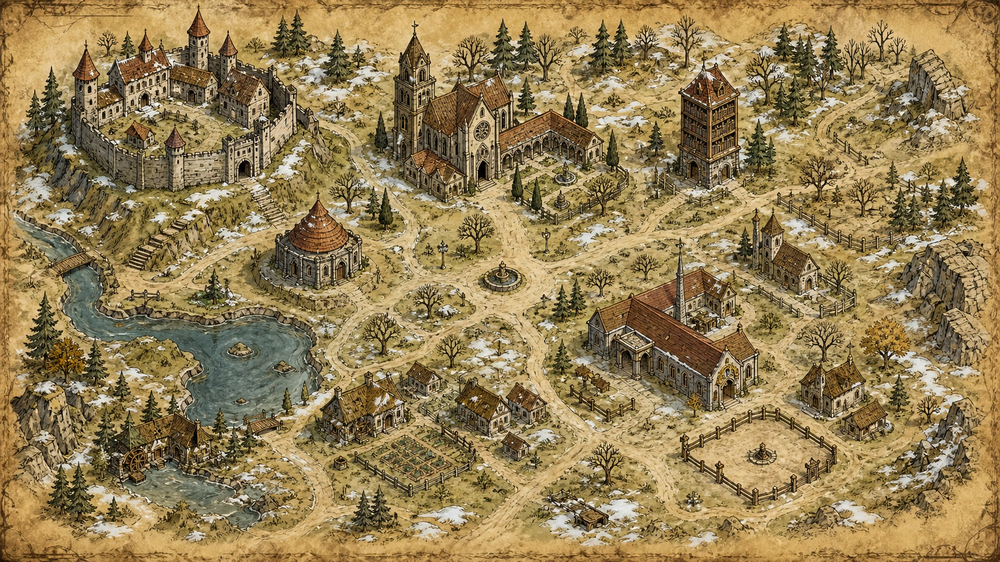

WASD / стрелки — ходить. Клик по земле — идти к точке. E или Enter — взаимодействовать рядом.
Идите к философу или месту подсказки.
Учебная бродилка
Ходите по большой карте университета, подходите к философам и местам подсказок. Рядом с объектом нажмите E, чтобы начать диалог или войти в комнату подсказки.